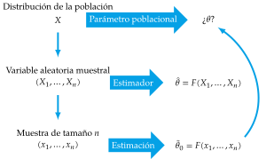
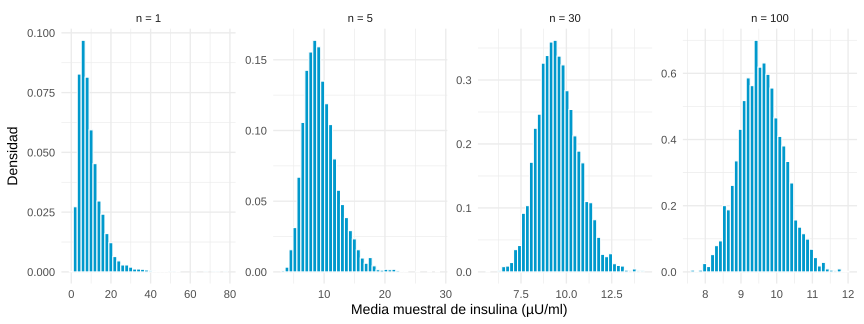
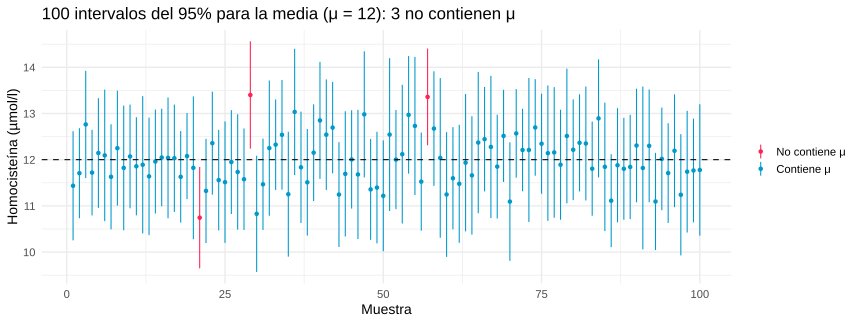

Estimación de parámetros
Distribuciones muestrales e intervalos de confianza en Nutrigenómica

Estimación de parámetros
En Nutrigenómica casi nunca podemos medir a toda la población. Estudiamos una muestra y a partir de ella queremos conocer las características de la población, que llamamos parámetros.
| Parámetro poblacional | Estimador muestral | Ejemplo |
|---|---|---|
| Media \(\mu\) | Media muestral \(\bar X = \dfrac{\sum X_i}{n}\) | Homocisteína media de los portadores TT de MTHFR |
| Varianza \(\sigma^2\) | Cuasivarianza \(\hat S^2 = \dfrac{\sum (X_i-\bar X)^2}{n-1}\) | Variabilidad de la respuesta glucémica postprandial |
| Proporción \(p\) | Proporción muestral \(\hat p = \dfrac{X}{n}\) | Frecuencia del alelo de riesgo de FTO |
Importante
El parámetro es un valor fijo pero desconocido. El estimador es una variable aleatoria, porque su valor cambia de una muestra a otra.
Definición 1 (Estimador) Un estimador de un parámetro \(\theta\) es una función de la muestra aleatoria \(\hat\theta = F(X_1,\ldots,X_n)\). El valor que toma en una muestra concreta, \(\hat\theta_0 = F(x_1,\ldots,x_n)\), es una estimación.

Estimador y estimación
La desviación típica de un estimador se llama error estándar y mide la precisión de la estimación.
Para medir esa precisión necesitamos conocer la distribución del estimador: su distribución muestral.
Teorema 1 (Distribución de la media muestral) Si \(X_1,\ldots,X_n\) es una muestra aleatoria de una población con media \(\mu\) y varianza \(\sigma^2\), entonces \[ E(\bar X) = \mu \qquad \mbox{y} \qquad Var(\bar X) = \frac{\sigma^2}{n}. \] Si además la población es normal, \(\bar X \sim N\left(\mu, \dfrac{\sigma}{\sqrt{n}}\right)\).
El error estándar de la media es \(\sigma/\sqrt{n}\): para reducirlo a la mitad hay que cuadruplicar el tamaño muestral.
¿Y si la población no es normal, como ocurre con la insulina o los triglicéridos?
Teorema 2 (Teorema central del límite) Si \(X_1,\ldots,X_n\) es una muestra aleatoria de una población cualquiera con media \(\mu\) y varianza \(\sigma^2\) finita, entonces, para \(n\) grande, \[ \bar X \overset{\text{aprox}}{\sim} N\left(\mu, \frac{\sigma}{\sqrt{n}}\right) \qquad \mbox{o, equivalentemente,} \qquad \frac{\bar X-\mu}{\sigma/\sqrt{n}} \overset{\text{aprox}}{\sim} N(0,1). \]
En la práctica la aproximación es buena para \(n\geq 30\), aunque con distribuciones muy asimétricas (PCR, conteos de la microbiota) hacen falta muestras mayores.
Ejemplo 1 La insulina en ayunas sigue una distribución lognormal muy asimétrica (mediana 8 µU/ml, \(\sigma = 0.6\) en escala log). Simulamos 5000 muestras de distintos tamaños y calculamos la media de cada una.

A medida que crece \(n\), la distribución de la media se vuelve simétrica, normal y más concentrada en torno a \(\mu = e^{\log 8 + 0.6^2/2} \approx 9.58\) µU/ml.
Teorema 3 (Distribución de la cuasivarianza muestral) Si \(X_1,\ldots,X_n\) es una muestra aleatoria de una población normal \(N(\mu, \sigma)\), entonces \[ \frac{(n-1)\hat S^2}{\sigma^2} \sim \chi^2(n-1). \]
Consecuencias
Por otro lado, combinando la distribución de \(\bar X\) y la de \(\hat S^2\) se obtiene que \[ \frac{\bar X-\mu}{\hat S/\sqrt{n}} \sim T(n-1), \] que es la base de los intervalos y contrastes para la media cuando no conocemos \(\sigma\).
Ejemplo 2 La HbA1c en pacientes con diabetes tipo 2 bien controlados es \(X\sim N(6.5, 0.4)\). Simulamos 5000 muestras de tamaño 15 y calculamos \(14\hat S^2/0.4^2\) en cada una.
El histograma de las simulaciones coincide con la densidad de la \(\chi^2(14)\) (línea roja), cuya media es 14.
Teorema 4 (Distribución de la proporción muestral) Si \(X\sim B(n, p)\) es el número de individuos con una característica en una muestra de tamaño \(n\), la proporción muestral \(\hat p = X/n\) cumple \[ E(\hat p) = p \qquad \mbox{y} \qquad Var(\hat p) = \frac{p(1-p)}{n}, \] y, por el teorema central del límite, si \(np\geq 5\) y \(n(1-p)\geq 5\), \[ \hat p \overset{\text{aprox}}{\sim} N\left(p, \sqrt{\frac{p(1-p)}{n}}\right). \]
Ejemplo 3 Si la frecuencia real del alelo A de FTO es \(p = 0.42\) y genotipamos \(n = 300\) alelos (150 personas), la proporción muestral tiene error estándar \(\sqrt{0.42\cdot 0.58/300} = 0.028\), de modo que el 95% de las muestras darán una frecuencia entre 0.364 y 0.476.
Intervalos de confianza
Una estimación puntual no informa de su precisión. Es preferible dar un intervalo de valores plausibles para el parámetro.
Estimación puntual y por intervalos
Definición 2 (Intervalo de confianza) Dados dos estadísticos \(l_1(X)\) y \(l_2(X)\), el intervalo \([l_1(X), l_2(X)]\) es un intervalo de confianza para el parámetro \(\theta\) con nivel de confianza \({1-\alpha}\) si \[ P(l_1(X) \leq \theta \leq l_2(X)) = 1-\alpha. \]
Lo habitual es usar niveles de confianza del 90%, 95% o 99%. La semiamplitud del intervalo se llama margen de error.
Lo que SÍ es
Lo que NO es
Ejemplo
Si el intervalo del 95% para la homocisteína media de los portadores TT de MTHFR es \([13.4, 15.5]\) µmol/l, decimos que con una confianza del 95% la media poblacional está entre 13.4 y 15.5 µmol/l. No decimos que el 95% de los portadores TT tenga la homocisteína en ese rango.
El parámetro es fijo; lo aleatorio son los límites del intervalo. Si repitiéramos el estudio muchas veces y construyéramos un intervalo del 95% con cada muestra, aproximadamente el 95% de esos intervalos contendrían el verdadero valor del parámetro.

Precaución
Una vez calculado con nuestra muestra, el intervalo contiene o no contiene a \(\theta\). No es correcto decir que la probabilidad de que \(\theta\) esté en el intervalo es del 95%; decimos que tenemos una confianza del 95%.
Si la población es normal (o \(n\geq 30\)) y conocemos \(\sigma\), sabemos que \[ Z = \frac{\bar X-\mu}{\sigma/\sqrt{n}} \sim N(0,1) \Rightarrow P\left(-z_{\alpha/2} \leq \frac{\bar X-\mu}{\sigma/\sqrt{n}} \leq z_{\alpha/2}\right) = 1-\alpha, \] donde \(z_{\alpha/2}\) es el valor que deja una probabilidad \(\alpha/2\) a su derecha en la \(N(0,1)\) (\(z_{0.025} = 1.96\)). Despejando \(\mu\):
Teorema 5 (Intervalo de confianza para la media con varianza conocida) \[ \bar x \pm z_{\alpha/2}\frac{\sigma}{\sqrt{n}}. \]
Tamaño muestral
Para conseguir un margen de error \(E\) hace falta un tamaño muestral \(n = \left(\dfrac{z_{\alpha/2}\,\sigma}{E}\right)^2\).
Ejemplo 4 Por estudios previos se sabe que la desviación típica de la glucosa en ayunas en adultos sin diabetes es \(\sigma = 12\) mg/dl. En una muestra de 40 portadores del alelo de riesgo T del SNP rs7903146 de TCF7L2 se obtiene una media de 98.5 mg/dl. Calcular el intervalo de confianza del 95% para la glucosa media de los portadores.
\[ 98.5 \pm 1.96\cdot\frac{12}{\sqrt{40}} = 98.5 \pm 3.72 = [94.78,\ 102.22] \mbox{ mg/dl}. \]
Con una confianza del 95%, la glucosa media de los portadores está entre 94.8 y 102.2 mg/dl.
Para reducir el margen de error a 2 mg/dl harían falta \(n = \left(\frac{1.96\cdot 12}{2}\right)^2 \approx 139\) portadores.
En la práctica \(\sigma\) es desconocida y se estima con \(\hat S\). Si la población es normal, \[ T = \frac{\bar X-\mu}{\hat S/\sqrt{n}} \sim T(n-1), \] y razonando igual que antes:
Teorema 6 (Intervalo de confianza para la media con varianza desconocida) \[ \bar x \pm t^{n-1}_{\alpha/2}\frac{\hat s}{\sqrt{n}}, \] donde \(t^{n-1}_{\alpha/2}\) es el valor que deja una probabilidad \(\alpha/2\) a su derecha en la \(T(n-1)\).
Como \(t^{n-1}_{\alpha/2} > z_{\alpha/2}\), el intervalo es más ancho: pagamos la incertidumbre de no conocer \(\sigma\). Para \(n\) grande ambos intervalos casi coinciden.
| n | 5 | 10 | 20 | 30 | 50 | 100 | ∞ |
| t(n-1) al 95% | 2.776445 | 2.262157 | 2.093024 | 2.045230 | 2.009575 | 1.984217 | 1.959964 |
Ejemplo 5 Se mide la homocisteína plasmática (µmol/l) en 20 adultos homocigotos TT de MTHFR C677T con ingesta baja de folato. Calcular el intervalo de confianza del 95% para la homocisteína media.
| Grupo | n | Media | Desv. típica |
|---|---|---|---|
| Homocisteína (µmol/l) | 20 | 14.44 | 2.24 |
\[ \bar x \pm t^{19}_{0.025}\frac{\hat s}{\sqrt{n}} = 14.44 \pm 2.093\cdot\frac{2.24}{\sqrt{20}} = [13.39, 15.49] \mbox{ µmol/l}. \]
Con una confianza del 95% la homocisteína media está por encima de 12 µmol/l, el umbral habitual de hiperhomocisteinemia leve.
Por el teorema central del límite, \(\hat p \overset{\text{aprox}}{\sim} N\left(p, \sqrt{p(1-p)/n}\right)\). Sustituyendo \(p\) por \(\hat p\) en el error estándar:
Teorema 7 (Intervalo de confianza para una proporción (Wald)) Si \(n\hat p\geq 5\) y \(n(1-\hat p)\geq 5\), \[ \hat p \pm z_{\alpha/2}\sqrt{\frac{\hat p(1-\hat p)}{n}}. \]
Advertencia
Con muestras pequeñas o proporciones cercanas a 0 o 1 (variantes raras) el intervalo de Wald funciona mal. Es mejor usar el intervalo de Wilson o el exacto de Clopper-Pearson, basado directamente en la distribución binomial.
Ejemplo 6 En una muestra de 250 personas de una cohorte española, 38 son homocigotas TT de MTHFR C677T. Calcular un intervalo de confianza del 95% para la prevalencia del genotipo TT.
\[ \hat p = \frac{38}{250} = 0.152 \qquad 0.152 \pm 1.96\sqrt{\frac{0.152\cdot 0.848}{250}} = 0.152 \pm 0.045 \]
| Método | Intervalo del 95% |
|---|---|
| Wald | [0.107, 0.197] |
| Wilson | [0.113, 0.202] |
| Exacto de Clopper-Pearson | [0.110, 0.203] |
Los tres intervalos son muy parecidos porque \(n\hat p = 38 \geq 5\). Con una confianza del 95%, la prevalencia del genotipo TT está entre el 11% y el 20%.
Principales intervalos de confianza
| Parámetro | Condiciones | Intervalo |
|---|---|---|
| Media \(\mu\) | Normal o \(n\geq 30\), \(\sigma\) conocida | \(\bar x \pm z_{\alpha/2}\dfrac{\sigma}{\sqrt{n}}\) |
| Media \(\mu\) | Normal o \(n\geq 30\), \(\sigma\) desconocida | \(\bar x \pm t^{n-1}_{\alpha/2}\dfrac{\hat s}{\sqrt{n}}\) |
| Proporción \(p\) | \(n\hat p\geq 5\), \(n(1-\hat p)\geq 5\) | \(\hat p \pm z_{\alpha/2}\sqrt{\dfrac{\hat p(1-\hat p)}{n}}\) |
| Varianza \(\sigma^2\) | Población normal | \(\left[\dfrac{(n-1)\hat s^2}{\chi^2_{n-1,\alpha/2}}, \dfrac{(n-1)\hat s^2}{\chi^2_{n-1,1-\alpha/2}}\right]\) |
Nota
\(\chi^2_{n-1,\alpha/2}\) es el valor que deja una probabilidad \(\alpha/2\) a su derecha en la \(\chi^2(n-1)\). El intervalo para la desviación típica se obtiene tomando raíces cuadradas.
Ejemplo 7 Para validar un nuevo protocolo de medida de la HbA1c capilar se mide a 15 pacientes, obteniendo una cuasidesviación típica \(\hat s = 0.252\) %. Calcular el intervalo de confianza del 95% para la desviación típica.
\[ \left[\frac{14\cdot 0.0635}{26.12},\ \frac{14\cdot 0.0635}{5.63}\right] = [0.0340, 0.1580] \]
Tomando raíces cuadradas, con una confianza del 95% la desviación típica del método está entre 0.185 y 0.397 %.
| Parámetro | Condiciones | Intervalo |
|---|---|---|
| \(\mu_1-\mu_2\) | Muestras independientes, normales, \(\sigma_1^2=\sigma_2^2\) | \(\bar x_1-\bar x_2 \pm t^{n_1+n_2-2}_{\alpha/2}\, \hat s_p\sqrt{\dfrac{1}{n_1}+\dfrac{1}{n_2}}\) |
| \(\mu_1-\mu_2\) | Muestras independientes, normales, \(\sigma_1^2\neq\sigma_2^2\) (Welch) | \(\bar x_1-\bar x_2 \pm t^{g}_{\alpha/2}\sqrt{\dfrac{\hat s_1^2}{n_1}+\dfrac{\hat s_2^2}{n_2}}\) |
| \(\mu_d = \mu_1-\mu_2\) | Muestras pareadas, diferencias normales | \(\bar d \pm t^{n-1}_{\alpha/2}\dfrac{\hat s_d}{\sqrt{n}}\) |
| \(p_1-p_2\) | Muestras independientes grandes | \(\hat p_1-\hat p_2 \pm z_{\alpha/2}\sqrt{\dfrac{\hat p_1(1-\hat p_1)}{n_1}+\dfrac{\hat p_2(1-\hat p_2)}{n_2}}\) |
| \(\sigma_1^2/\sigma_2^2\) | Muestras independientes, normales | \(\left[\dfrac{\hat s_1^2/\hat s_2^2}{f^{n_1-1,n_2-1}_{\alpha/2}}, \dfrac{\hat s_1^2/\hat s_2^2}{f^{n_1-1,n_2-1}_{1-\alpha/2}}\right]\) |
Donde \(\hat s_p^2 = \dfrac{(n_1-1)\hat s_1^2+(n_2-1)\hat s_2^2}{n_1+n_2-2}\) es la varianza ponderada y \(g\) son los grados de libertad de Welch-Satterthwaite.
Ayuda
Si el intervalo para \(\mu_1-\mu_2\) o \(p_1-p_2\) no contiene el 0, o el intervalo para \(\sigma_1^2/\sigma_2^2\) no contiene el 1, hay evidencia de diferencias entre las poblaciones.
Ejemplo 8 Se sigue durante 6 meses a participantes con dieta hipocalórica y se mide la pérdida de peso (%) según el genotipo de FTO rs9939609. Calcular el intervalo de confianza del 95% para la diferencia de medias.
| Grupo | n | Media | Desv. típica |
|---|---|---|---|
| AA (alelo de riesgo) | 18 | 4.31 | 1.91 |
| TT (alelo protector) | 25 | 6.74 | 2.79 |
| Método | Intervalo del 95% para \(\mu_{AA}-\mu_{TT}\) |
|---|---|
| Varianzas iguales | [-3.96, -0.89] |
| Varianzas distintas (Welch) | [-3.87, -0.98] |
El intervalo no contiene el 0: los homocigotos AA pierden de media menos peso que los TT.
Ejemplo 9 Se miden los triglicéridos (mg/dl) de 14 pacientes con hipertrigliceridemia antes y después de 8 semanas de suplementación con 3 g/día de omega-3 (EPA + DHA).
| Grupo | n | Media | Desv. típica |
|---|---|---|---|
| Antes | 14 | 247.00 | 38.20 |
| Después | 14 | 212.29 | 27.35 |
| Diferencia (después − antes) | 14 | -34.71 | 18.39 |
Las mediciones del mismo individuo no son independientes, así que se trabaja con las diferencias \(d_i\): \[ \bar d \pm t^{13}_{0.025}\frac{\hat s_d}{\sqrt{14}} = -34.71 \pm 2.160\cdot\frac{18.39}{\sqrt{14}} = [-45.33, -24.10]. \]
Con una confianza del 95%, el omega-3 reduce los triglicéridos entre 24 y 45 mg/dl de media.
Ejemplo 10 En un ensayo con suplementación de ácido fólico, la homocisteína se normaliza (< 12 µmol/l) en 52 de 70 portadores CC/CT de MTHFR y en 24 de 45 homocigotos TT.
\[ \hat p_{CC/CT} = \frac{52}{70} = 0.743 \qquad \hat p_{TT} = \frac{24}{45} = 0.533 \]
\[ 0.743 - 0.533 \pm 1.96\sqrt{\frac{0.743\cdot 0.257}{70}+\frac{0.533\cdot 0.467}{45}} = [0.031, 0.388]. \]
El intervalo no contiene el 0: la suplementación normaliza la homocisteína en más portadores CC/CT que TT, con una diferencia de entre 3 y 39 puntos porcentuales.
Ejemplo 11 Se compara la variabilidad de la respuesta glucémica postprandial (incremento del área bajo la curva, mmol·min/l) a una misma comida entre portadores TT y CC de TCF7L2 rs7903146.
| Grupo | n | Media | Desv. típica |
|---|---|---|---|
| TT | 16 | 214.5 | 47.24 |
| CC | 20 | 191.1 | 24.40 |
\[ \frac{\hat s_{TT}^2}{\hat s_{CC}^2} = 3.747 \qquad \mbox{Intervalo del 95\%: } [1.432, 10.390]. \]
El intervalo para el cociente de varianzas no contiene el 1: la respuesta glucémica es más variable en los portadores TT.
Ejercicio 1 En un estudio con 30 voluntarios se mide la concentración de butirato fecal (µmol/g) antes y después de 4 semanas de una dieta rica en fibra. Las diferencias (después − antes) tienen media 4.2 y desviación típica 6.1.